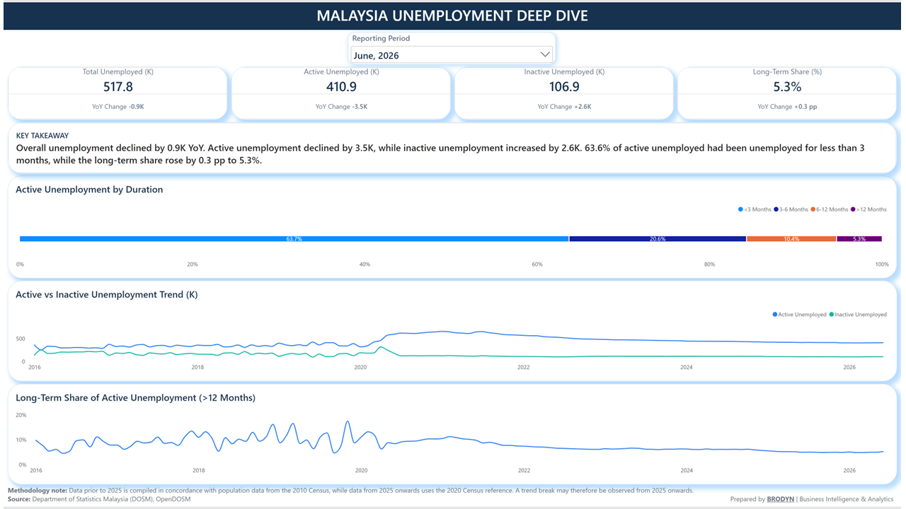

Labour force in the July overview; dashboard values are rounded.
Portfolio / Public data / Power BI
Malaysia Labour
Market Intelligence
Understanding employment trends and looking beyond the headline unemployment rate.
The question
How are employment and labour force participation changing in Malaysia, and what does the composition of unemployment reveal beyond the headline rate?
The approach
This project uses DOSM data from OpenDOSM to organise key indicators into two Power BI views: a labour market overview and an unemployment deep dive. Period selectors, year-on-year comparisons and historical trends support regular review.
Role: Data preparation, dashboard development and reporting. Tools: Power BI and Power Query. Source: Department of Statistics Malaysia, OpenDOSM. This is an independent portfolio project.
01 / July 2026 snapshot
Labour market overview
Employment, labour force, unemployment and participation trends in one view.

Year-on-year increase in employment shown in the July report.
July unemployment rate, with an unchanged year-on-year rate shown.
02 / June 2026 snapshot
Unemployment deep dive
Compare active and inactive unemployment, unemployment duration and the long-term share of active unemployment.

The June report shows 410.9k active and 106.9k inactive unemployed persons. The long-term share of active unemployment is 5.3%, up 0.3 percentage points year on year.
Snapshot note: the supplied image displays 63.6% in its takeaway and 63.7% in the duration chart for unemployment below three months. That figure is excluded from the written findings pending reconciliation.
How the report can be used
Use the overview to review headline movements, then explore the unemployment breakdown to identify where further investigation may be useful. The report describes patterns; it does not establish their causes or measure the impact of a policy.
Reading the data carefully
The dashboard notes a population reference change: data before 2025 uses the 2010 Census reference, while data from 2025 uses the 2020 Census reference. A trend break may therefore occur from 2025 onwards. The images are fixed snapshots; selections and data in the interactive report may differ.